Through this official document, the Government of Turkmenistan presents its updated Nationally Determined Contribution (NDC) on the implementation of the Paris Climate Agreement in accordance with Decisions 1.CP/19, 1.CP/20 and 1.CP/21 of the United Nations Framework Convention on Climate Change (UNFCCC) to increase its climate objectives in line with the recommendations set out in the Article 4.4 of the Paris Agreement. The preparation of Turkmenistan's NDCs demonstrates the country's commitment to the goals of the Paris Agreement of keeping a global temperature rise well below 2 degrees Celsius above pre-industrial levels and to pursue efforts to limit the temperature increase even further to 1.5 degrees Celsius. The NDC follows the guidelines for preparation of the documentation to promote clarity, transparency and understanding contained in the decision 4/CMA1 adopted at the twenty-fourth session of the Conference of the Parties (COP-24) of the UNFCCC serving as the first Meeting of the Parties to the Paris Agreement.
The emission reductions proposed in this new NDC are confirmation of Turkmenistan's ambitious goal, which aims to reduce its greenhouse gas (GHG) emissions by 2030. This target remains the highest of all possible ambitions that Turkmenistan can achieve by implementing measures to reduce GHG emissions in such sectors as Energy, Transport, Agriculture, Industrial Processes and Product Use (IPPU) and Waste, as well as using co-mitigation benefits from adaptation measures to climate change.
Due to changing and unforeseen global circumstances, the indicative target for the period up to 2030 represents a greater effort from Turkmenistan than was originally proposed.
Turkmenistan will make every effort to achieve and exceed the targets set out in this NDC.
The NDC was prepared using a multisectoral approach that included whole-of-society engagement with key ministries, public and private sector stakeholders, academic and technical experts, civil society organizations and representatives of various vulnerable groups. The Government of Turkmenistan highly appreciates the support provided by the United Nations Development Programme (UNDP), United Nations Framework Convention Climate Change (UNFCCC) Secretariat, Global Environment Facility (GEF), United Nations Environment Programme (UNEP), United Nations Children’s Fund (UNICEF), United Nations Industrial Development Organization (UNIDO), Food and Agriculture Organization of the United Nations (FAO), the Regional Environmental Centre for Central Asia (CAREC), International Renewable Energy Agency (IRENA), German Society for International Cooperation (GIZ), and International Banking Structures - the World Bank (WB), the European Bank for Reconstruction and Development (EBRD), the Asian Development Bank (ADB), the Islamic Development Bank (IsDB) in helping the country achieve the goals of the UNFCCC and the Paris Climate Agreement.
The NDC of Turkmenistan is based on numerous national strategic documents and programs including: the National Strategy of Turkmenistan on Climate Change (new edition, NSTCC, 2019), "Programs for the socio-economic development of Turkmenistan for the period 2011-2030", the National Program of the President of Turkmenistan for the transformation of social and living conditions of the population of villages, settlements, cities in districts and district centers for the period up to 2020 in a new edition, the National Strategy for the Development of Renewable Energy in Turkmenistan to 2030, the State Program on Energy Saving for 2018-2024, the Program of the President of Turkmenistan on the socio-economic development of the country for 2019–2025.
The NDC was primarily developed on the basis of the updated National Strategy of Turkmenistan on Climate Change and reflects the results of climate change mitigation measures, which were discussed with all national stakeholders during the period 2019–2021.
Turkmenistan is firmly committed to the principles of the Paris Agreement and full of determination to pursue mitigation and adaptation goals in accordance with its national circumstances and capabilities.
Turkmenistan is a landlocked country located in the western part of Central Asia, bordered to the north by Kazakhstan, to the northeast and east by Uzbekistan, to the southeast by Afghanistan and to the south by Iran. In the west, the natural border is the Caspian Sea, through which Turkmenistan borders with Azerbaijan. (Fig. 1).
The area of Turkmenistan is 491.21 thousand square km. The territory stretches 1,100 km from the west to the east and 650 km from the north to the south.
Turkmenistan is a country with a developing economy, with an annual stable growth rate of the gross domestic product (GDP) of 6-8% in recent years. The population of the country is more than 6 million people.
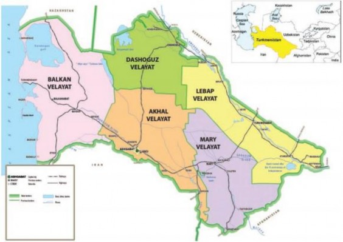
Figure 1. Political and administrative map of Turkmenistan
Among the countries of Central Asia, Turkmenistan has the flattest relief, which makes up about 80% of the territory in the form of deserts and semi-deserts. Approximately 20% of the territory of Turkmenistan is occupied by mountains, foothill plains and uplands. The formation of the main landforms is primarily associated with the history of the geological development of the area and is due to the physical and geographical influence. The flat part has a general slope towards the Caspian Sea, from east to west.
Geographically, the entire flat part of Turkmenistan belongs to the Turan lowland, within which three categories of landscape are distinguished: a) tertiary plateau; b) sandy deserts; c) loess piedmont plains. The first includes the Krasnovodsk plateau, the extremities of Ustyurt and Mangyshlak, the second includes the Central, South- Eastern and Zaunguz Karakum and the third includes the northern foot of the Kopetdag and Paropamiz.
In the south, sandy deserts turn into the hills and foothills of the Kopetdag - medium-altitude (up to 2942 m above sea level) mountains; to the north of them, two ridges are located separately - Small and Big Balkhans. A foothill plain adjoins the Kopetdag from the north, which merges with the Caspian lowland plain in the west.
In the southeast, the northern foothills of Paropamiz “enter” the borders of Turkmenistan - the Badkhyz (up to 1267 m) and Karabil (up to 984 m) uplands, separated by the Murgab River. In the east, there are the Koytendag mountains, in the west - the Caspian Sea, the depth of which in some places reaches more than 1000 m.
Turkmenistan is characterized by one of the most severe climatic conditions in the Central Asian region. The climate is sharply continental, dry, with a predominance of very high air temperatures and very low precipitation. Summers are hot and dry and last from May to September, while winters are generally mild and dry. Most of the rainfall occurs between January and May; rainfall throughout the country is low, with an average annual value of 300 mm in the Kopetdag to 80 mm in the north-west.
The absolute maximum surface temperature was observed in the southeastern Karakum Desert (Repetek station) - above 80 ° C. In the northeastern region (Dashoguz oasis), the frost-free period lasts from 187 to 200 days, while in the rest of the country this period averages 230–250 days. The total solar radiation fluctuates between 606.7 (in the northwest) and 682.0 kJ/cm2 (in the southeast).
The average annual precipitation ranges from 76 to 380 mm. In January, the relative humidity reaches 70–80%. During the dry period (from June to September), the relative humidity in the Karakum Desert is 20-30% and in the oases 30-35%.
Throughout the year, sandstorms occur for 35–67 days, although in some years their number can reach 106–113 days. On the plains, the average annual wind speed is 3.2–4.2 m/s.
The current stage of the socio-economic development of Turkmenistan is characterized by the implementation of large-scale reforms aimed at modernizing the economy to accelerate the transfer of the entire national economic complex to a new industrial and innovative development path. The main goal of the strategy of industrial and innovative development of Turkmenistan is formation of a modern structure of the industry based on innovations aimed at sustainable development. For this purpose, the economy is diversified, measures are being taken to ensure the competitiveness of products in the domestic and foreign markets, the main production sectors are being modernized, legal, organizational and economic measures and conditions necessary for its transfer to an industrial-innovative development path are being implemented.
Structural changes are taking place: new manufacturing industries are being created, modern high-tech industrial complexes, plants and factories, processing industry facilities are being put into operation, which are designed to produce domestic competitive products that meet international quality standards.
The key areas of the new economic strategy are modernization, diversification and general liberalization of the economy, combination of elements of the market and state regulation. Along with the priority development of the fuel and energy and agro-industrial complex, chemical industry, transport and information-communication infrastructure, significant investments are directed to the social, scientific, and educational spheres.
Large-scale reforms in the social sphere are carried out in accordance with sectoral medium-term development programs. The Program of the President of Turkmenistan for the socio-economic development of the country for 2012-2016, 2019-2025 and the National Program for the socio-economic development of Turkmenistan for the period 2011-2030 became the benchmark in development of these programs.
Social benefits for the population are preserved, including material security and social services for disabled people, families with children through the payment of pensions and benefits.
The state financially supports large families and young families receive financial assistance for the housing construction. The Labor
Code provides benefits for pregnant women, nursing mothers and mothers with disabled children, preservation of the workplace of a woman on parental leave. The minimum tariffs remain for the use of water, electricity, gas, communal services, and housing, 1% mortgage loan for home purchase and other benefits.
High growth rates have become characteristic of the country's dynamically developing economy (Fig.2). In 2012–2020 the volume of GDP increased by 1,59. There have been changes in the structure of GDP: the share of the industry in 2020 amounted to 28%; agriculture 11.5%; construction - 9.5%; transport and communications - 10.7%; trade and nutrition of the population - 18.7%; other sectors -21.6%.
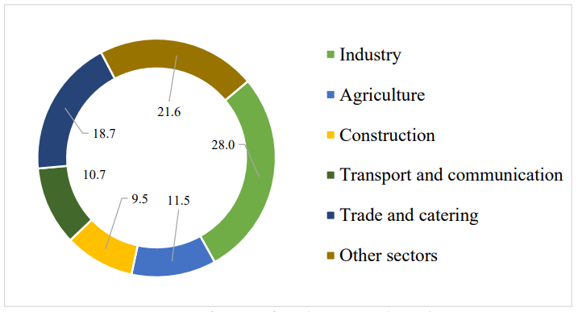
Figure 2. Structure of GDP of Turkmenistan by industry in 2020
Turkmenistan is currently characterized as an industrial and investment country with developing infrastructure. High rates of economic growth are ensured by an active investment policy. In 2007– 2020, the volume of investments in fixed assets increased by 7.8 times, while the state investments account for the bulk of it. The key direction of the economic strategy of Turkmenistan is the establishment of long- term and mutually beneficial trade and economic cooperation with foreign countries, leading foreign companies, and financial institutions.
The foreign trade turnover of Turkmenistan is expanding every year. Trade and economic relations have been established with more than 100 countries of the world. In 2020, in the structure of imports, 73.6% were products for industrial purposes, including modern technologies and equipment. The importers of technologies and equipment to Turkmenistan are China, the Republic of Korea, Turkey, Japan, Germany, France, Great Britain, the USA, Russia, Ukraine, Belarus, etc. In order to attract foreign investment to the country's economy and create favorable conditions, a comprehensive program is being implemented to further attracting foreign investments and introducing advanced technologies, creating the most favorable conditions for investors, which have been developed at the initiative of the President of Turkmenistan. Active investment policy and creation of conditions for developing the country’s construction complex have led to economic growth, its diversification, new achievements in science and technology, formation of new innovative industries.
In the Programs of the President of Turkmenistan for the socio- economic development of the country for 2012-2016, 2019-2025, the priority of the investment policy is the diversification of the sectoral structure of GDP through establishing of new industries, both focused on exports and import-substituting, industrial - innovative way of economic development. Investments made for solving these problems contribute not only to the growth of the construction, industries and employment increase, but also contribute to their dissemination in other areas of the economy.
Foreign investments in recent years account for 11 % of the total investment in the country (Fig. 3). Mainly, investments are made in exploration and production of hydrocarbon resources, light industry, and construction. In order to increase the attractiveness of the capital investment in the economy of Turkmenistan, the legislative framework of the investment process is being consistently improved, taking into account international requirements.
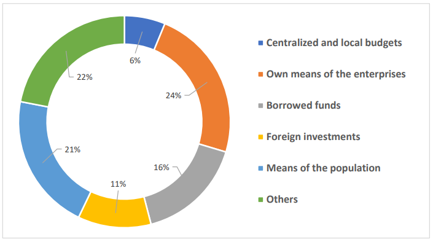
Figure 3. Distribution of investments in fixed assets by sources of financing in 2018
Global warming may have significant impact on many aspects of the country’s socio-economic development in the future, and this is mainly water management, agriculture and healthcare. Along with this, significant impact will be exerted on flora, fauna, forests, as well as water, soil and land resources.
Intensive development of the economy, population growth in the future will entail an increase in water consumption, in which the country is currently experiencing a shortage. The consequence of climate change will be a reduction in available water resources and deterioration of its quality. This, in turn, it will affect the development of several sectors of the economy, primarily agriculture and public health.
The country's agricultural sector is most dependent on the projected climate change. The increased likelihood of poor harvests due to increased frequency of droughts could have a significant impact on the industry’s profitability. The shortage of irrigation water will lead to increased degradation of irrigated lands, their salinization and soil erosion, degradation and reduction of natural pastures.
Considering the climatic characteristics of the country, the most negative impact in Turkmenistan will be the possible impact of climate change on human health because of increased likelihood of getting thermal overheating, diseases of the cardiovascular system, respiratory organs, nervous system, diabetes, and epilepsy.
Over the past 55 years, intense warming has been observed throughout the country, which is occurring at a faster pace than on the planet due to the country’s climatic features. During this period, the average atmospheric temperature increased by 1.4°C, while globally, the temperature has increased by an average of 0.8°C over the past 100 years. According to studies in Central Asia in general, and in Turkmenistan in particular, further climate warming is expected: an increase in air temperature and a decrease in precipitation, as well as an increase in the number and strength of natural hydrometeorological events.
For assessing likely climate change and its possible consequences in Turkmenistan, regional climatic scenarios have been developed for the territory of the country. According to these scenarios, an increase in ambient air temperature is expected throughout the territory of Turkmenistan, as well as a decrease in precipitation. Calculations show an increase In temperature by 2100 from 2-3°C (optimistic scenario) to 6-7°C (pessimistic scenario) relative to the 1990 baseline norm.
The expected increase in air temperature and decrease in annual precipitation will have a possible significant impact on many aspects of the country’s socio-economic development in the future.
Therefore, adaptation to climate change is one of the main priorities of the National Strategy of Turkmenistan on Climate Change and part of this NDC.
The impact of climate change on economic sectors is expressed through the impact on them of various natural phenomena. Extreme hydrometeorological phenomena intensifying because of the climate change cause significant damage to economic sectors and livelihoods of the population around the world. In the framework of the preparation of the Third National Communication of Turkmenistan under the UNFCCC (2012–2015), the climate change risk assessment was carried out in Turkmenistan for the period from 1950 to 2010, which describes the high vulnerability of Turkmenistan to climate change. This vulnerability is largely related to the increase, frequency, and intensity of such extreme hydrometeorological phenomena as drought, hail, storm winds, frosts, heat waves, floods and mudflows.
The greatest threat (risk) to the socio-economic well-being of the country is posed by drought, the appearance of which is caused by high air temperatures and a shortage of water resources. Currently, there is a noticeable tendency to an increase in the frequency of dry years of the main rivers of Turkmenistan – the Amu Darya and Murghab (Fig.4).
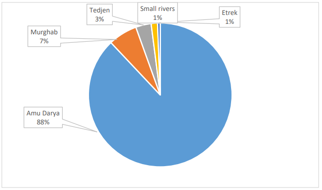
Figure 4. Surface water resources of Turkmenistan.
Climate warming will become an additional risk factor for the development of hydrological drought and desertification, negatively affecting water resources and accordingly, agriculture.
Turkmenistan is a country where drought is registered quite often, and since about 80% of its territory is occupied by the Karakum Desert, this is one of the urgent problems that need to be addressed and appropriate measures taken. Successful operation of the country’s livestock farms directly depends on the yield of pastures, which is determined by the climatic conditions of the territory. In dry years, pasture vegetation burns out earlier than in the terms recorded according to average long-term data, and its yield is reduced by 50–70%. The severe drought, which was observed in 2000 and 2001, led to a significant decrease in the yield of pasture grasses. During these years, it was, respectively, 40–70 and 43–58% of the multi-year norm. Taking into consideration increase in the frequency of drought since 2000, the damage caused and the scale of this phenomenon, it is necessary to pay special attention to the fact that it poses a threat to the productivity of the country’s agricultural sector. This is the most dangerous and large- scale disaster among other similar natural phenomena in Turkmenistan, posing a real threat to the country’s economy and its sustainable development. Out of the 34-year period (1975–2008), the water content of the Amu Darya was high for 27 years. 1982, 1986, 1989, 2000 were dry years with an average annual runoff below 77%, and the years 2001 and 2008 were the most low-water for the entire observation period – 66 and 56%, respectively. This was due to the scarcity of seasonal snow reserves in the catchment area.
Floods and mudslides are fast-moving natural phenomena, but they cause great destruction and huge economic damage. The territory of Turkmenistan can be divided into three large and dangerous zones in terms of mudflow manifestation possibilities: Koytendag, Kopetdag, Big and Small Balkhans. In 80% of the case, it is mudflow – a water flow carrying various sediments, in 20% it is mud and mud-stone flows. In Turkmenistan, mudflows are observed in 229 permanent and temporary watercourses. Mudflow-prone rivers are located mainly in the Kopetdag. For almost 100 years, more than 1500 cases of mudflows have been recorded on 80 watercourses of the Kopetdag, 87% of them occurred in April-August because of intense rainfall. In this regard, the most dangerous months are April and May, which account for 54% of all registered mudflows. The mudflow hazardous period on the rivers and ravines of the Kopetdag is March – September, in rare cases, mudflow descends in October, even less often in winter. Floods are rare in summer and autumn months, but their intensity and volume of runoff can be significantly higher than the norm and therefore they cause very significant damage. According to the results of observations, it has been established that since 1990, mudflows of varying intensity have been observed annually.
In winter, ice phenomena are observed on the territory of Turkmenistan, especially in the middle reaches of the Amu Darya. Almost every year, weak ice phenomena are formed in the Darganata – Lebap section due to a decrease in air temperature to negative values. In some years, because of a drop in air temperature to –25–30 ° C, the Amudarya is icebound with the formation of powerful ice dams and as a result the water level in the river rises sharply and the adjacent territories are flooded. This is especially typical for the section
Turkmenabat – Darganata. The strongest ice phenomena on the Amu Darya were observed in 1969 and 2008.
The National Strategy of Turkmenistan on Climate Change identifies vulnerable sectors, the activities of which are most sensitively affected by climate change. These are agriculture and water sectors, health care, soils and land resources, ecosystems and forestry, hydrometeorological activities. A list of adaptation measures to mitigate the consequences of climate impact is proposed for each of these sectors.
Global processes of climate change have a strong impact on the above-mentioned sectors of the economy leading to the occurrence of dangerous weather (natural hydrometeorological) phenomena and therefore there is an urgent need for active adaptation measures. Climate change processes also have an impact on other sectors: industry, oil and gas, energy, transport, housing and communal services, waste, etc. However, due to the lack of local data on the impact of climate change on the activities of these sectors, the issues of their adaptation are planned to be studied in the framework of the preparation of a national adaptation plan.
The National Strategy of Turkmenistan on Climate Change is the basic document for reporting on the implementation of Turkmenistan’s commitments under the UNFCCC and the Paris Agreement. The Strategy aims to take measures to adapt to the actual and anticipated climate changes and limiting greenhouse gas emissions. The Strategy defines the main directions and priority sectors for adaptation to climate change, in which adaptation measures aimed at reducing the risks associated with climate change have been planned and are already being implemented.
The development of measures to adapt the priority sectors of the economy of Turkmenistan to climate change is integrated into the main national development documents of the country, such as the National Strategy for the Economic, Political and Cultural Development of Turkmenistan for the period up to 2030 and the National Program of the President of Turkmenistan to transform the social and living conditions of the population of villages, towns, cities in districts and district centers for the period up to 2020 in a new edition. Appropriate measures are envisaged on a long-term basis to reduce climate risks in vulnerable sectors.
In accordance with the National Strategy of Turkmenistan on Climate Change, specific measures are being implemented to adapt to climate change.
Thus, activities are currently ongoing in the healthcare system in accordance with the National Action Plan (2020–2025) for adapting the health of the population of Turkmenistan to climate change and its adverse impacts. The Scientific and Clinical Center of Physiology of the Ministry of Health and Medical Industry of Turkmenistan conducts scientific works to assess the impact of high air temperatures on the health of the population, the body’s adaptation to a hot climate. The regularities of the functioning of the whole organism and its systems under the influence of natural-climatic and production factors are studied to develop optimal ways for adapting the human body to the extreme hot climatic and geographical conditions of Turkmenistan.
The new edition of the National Strategy of Turkmenistan on Climate Change also reflects provisions on raising awareness of climate change issues among the younger generation, as well as adaptation and increasing resilience to the impacts of climate change on children. As a result of the joint work between the UNDP and UNICEF, similar provisions are reflected in this NDC too. To consider the interests of children in the development of adaptation policies to climate change, UNICEF suggests to:
Develop possible practical recommendations for the prevention of the adverse impact of weather and climatic factors on children’s health in Turkmenistan;
Conduct a general hygienic assessment of the climatic conditions of cities and regions of Turkmenistan, taking into account needs of the child’s body;
Conduct research and assess the impact of weather conditions on the schoolchildren’s working capacity in all regions of Turkmenistan.
These proposals are especially relevant in a global pandemic when the child’s body is under the pressure from infectious and non- communicable diseases related to the quality of the environment.
In order to further improve the health care system in Turkmenistan related to climate change, the following activities are planned:
Strengthening the health care system to minimize the impact of climate change on public health;
Raising awareness of the public, health care personnel, policymakers about the impact of climate change on human health in order to implement health measures;
Inclusion of the impact of climate change on public health in the curricula of the State Medical University of Turkmenistan and medical schools;
Strengthening regional and international cooperation between the Ministry of Health and the Medical Industry of Turkmenistan in the development of specific mechanisms for the implementation of action plans for the health sector related to climate change and other issues.
Agriculture in the country’s economy provides more than 11% of GDP (Fig.5). In recent years, the share of the cost of livestock products in the total cost of agricultural products has increased significantly because of the transition to market relations in Turkmenistan. This is carried out within the framework of the state policy for social protection of the population and accompanied by the transfer of a significant part of the livestock to private hands.
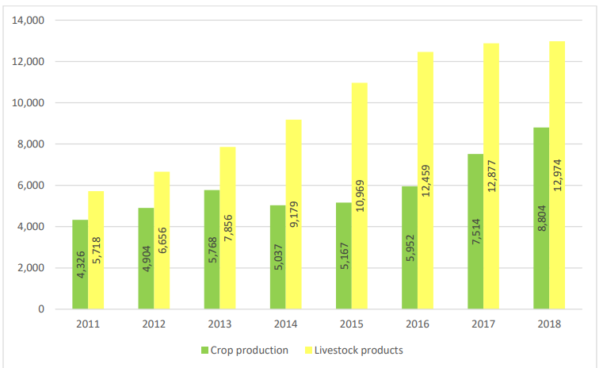
Figure 5. The cost of agricultural products (mln. Manats)
Currently, more than 90% of all animal species in Turkmenistan are concentrated in households. Agricultural production is growing steadily. At present, agriculture in Turkmenistan is considered not only as a type of economic activity, but also as a factor affecting the environment. Thus, greenhouse gas emissions in this sector account for 12.44% of total emissions and are growing from year to year.
In arid climate, agricultural production is inseparable from water management and 95% of agriculture is based on artificial irrigation. Agriculture of Turkmenistan is the largest consumer of water resources and about 90% of the country’s water resources are used in irrigated agriculture.
In accordance with the National Strategy of Turkmenistan on Climate Change, the following measures are planned to adapt agriculture to climate change:
Development and implementation of a set of measures to adapt agricultural production to climate change;
Optimization of the agricultural production placement, considering country’s needs in necessary agricultural products and minimizing the use of water resources;
Creation of agricultural innovation systems providing consulting services to agricultural producers, as well as other measures.
The study of the impact of global climate change on the hydrological regime of water bodies in Turkmenistan is of great importance in the context of shortage of water resources. The geographical location makes Turkmenistan very sensitive to climate change. Water management sector provides water not only for agriculture but also for other sectors of the country’s economy. This sector also meets the social needs of society, providing reliable drainage system, solving environmental problems.
An urgent problem is the assessment of possible changes in river flow. The reliability of such an assessment is determined by the accuracy of climate change forecasts and dependence of water regime characteristics on climatic conditions. It should be noted that the water management activities of the countries in the region have a significant impact on the regime of the Amu Darya River. In this regard, it is necessary to improve the system of joint (integrated) water resources management in the region.
Increasing the efficiency of irrigation systems will save significant volumes of irrigation water, which will become a significant reserve for replenishing the deficit of water resources in the context of climate change.
The introduction of progressive irrigation methods has shown that the transition from the traditional method of irrigation to new ones (drip, sprinkling) saves 30–40% of water.
The implementation of adaptation measures will make it possible to significantly compensate for the shortage of water for irrigation, which may be caused by climate change.
Currently, huge water management works are being carried out in all regions of Turkmenistan, new water facilities are being built and existing ones are being reconstructed. The largest water facilities are the Turkmen Lake of the Golden Age, the Dostluk reservoir, the expansion of the Zeid reservoir, as well as the construction of small local reservoirs on small springs and reconstruction of large irrigation systems almost in all regions of the country.
A new reservoir has recently been put into operation, which is designed to supply water from the Karakum River to agricultural fields in the western region of the country, in the Bereket district of the Balkan region. The reservoir has a capacity of 18 million cubic meters. It was built at the 1096th kilometer of the Karakum River, where water intake facilities with a capacity of 30 cubic meters of water per second are located. It is designed to collect water in the lower reaches of the “ water artery “ in the autumn-winter period and regulate its supply during irrigation of agricultural fields.
In the context of climatic changes, one of the reserves for the development of irrigated agriculture in Turkmenistan is recycling of collector-drainage waters. The total area of irrigated land in the country is about 1.8 million hectares and the country’s land reclamation fund, suitable for development is more than 17 million hectares. In conditions of water shortage, return water is a significant reserve that can fill the deficit and be used for various needs of the national economy. Of particular importance is the fact that a significant part of the collector- drainage water previously discharged into the Amu Darya is currently diverted into the Turkmen Lake of the Golden Age. The share of currently used collector-drainage waters is insignificant, although numerous and long-term studies have been carried out in Turkmenistan on their use for irrigating salt-tolerant crops. Development of specific measures to improve the management of return water will significantly reduce the shortage of water resources, improve the environment, create new jobs and thereby, improve the standard of living of a certain segment of the population.
According to scientists, by 2030, the estimated water shortage due to an increase in temperature, a decrease in river flow and an increase in evaporation because of climate change may be significant in Turkmenistan.
Therewith, possible annual damage from the loss of agricultural products can amount to several billion manats. In addition, it is necessary to carry out the following adaptation measures in the country:
Complex reconstruction of irrigated lands (CRIL) on an area of 70 thousand ha;
Land reclamation improvement (LRI) – on an area of 170 thousand ha;
Reconstruction of existing and construction of new hydraulic structures; and others.
In doing so, it is necessary to consider the important fact that the benefit to cost ratio is 4 to1, i.e., $1 invested today could yield $4 return in 2030. In accordance with the National Strategy of Turkmenistan on Climate Change, multiple adaptation measures are planned to adapt the water sector to climate change, including the following:
Increasing the efficiency of irrigation systems through modernization and technical re-equipment;
Improving water resources management through the transition to the Integrated Water Resources management (IWRM);
Improvement of the legal regulation for management, protection, and use of water resources;
Improvement of the system of joint water resources management in the region;
Development of smart information irrigation planning systems;
Transfer of diesel pumping stations to an electric drive and using renewable energy sources (solar, wind) and other measures.
Soil and land resources play a unique role in climate change, being a target and a source of greenhouse gas emissions that lead to climate change and carbon sink. In the process of using soil and land resources in agricultural production and other sectors of the economy, their quality changes. Currently, the process of human impact on land resources has intensified. Along with global climate change and the impact of other natural factors, this leads to desertification of large areas, increase in the volume of mineralized drainage runoff, salinization, erosion, pollution, soil over consolidation, etc. and in general to land degradation.
To preserve the quality of soil and land resources due to climate change, as well as to enhance their adaptive capacity, numerous adaptation measures are planned, including:
Updating the National Action Program to Combat Desertification;
Conducting a comprehensive inventory of soil and land resources with a detailed description of the irrigated lands and pastures of the country;
Widespread introduction and use of GIS technologies in data processing on land resources;
Improving the regulatory framework and other measures.
Natural ecosystems support the conditions necessary for life on Earth: they purify air and water, stabilize, and mitigate the climate, restore soil fertility, recycle waste, etc. Each biological species performs its own special functions and cannot be fully replaced by another. The totality of all species contributes to the maintenance of the life in our planet. Biodiversity components serve as a source of genetic material.
Due to its geographic location, Turkmenistan plays a key role in preserving global biodiversity and maintaining the functions of the biosphere. Sharply continental, exceptionally dry climate (long and hot summer period, seasonal and daily temperature fluctuations within wide ranges, low amount of atmospheric precipitation) and the country’s geographical position within the Eurasian continent significantly influenced the formation of the unique diversity of its flora and fauna.
To implement preventive measures to increase the resilience of ecosystems to climate change, multiple adaptation measures are planned, including:
Elaboration of the National Report on Ecosystem Resilience;
Development of the system of integrated observations of the state of environment (monitoring), assessment and forecast of changes in its state under the influence of natural and anthropogenic factors;
improvement of the system of financing specially protected natural areas (SPNAs) introducing innovative sources of financing and other measures.
The forests of Turkmenistan are valuable as a source of food products, raw materials for medicine and the production of dyes, ornamental plants, seeds of various plant species and the main sink of carbon – the main greenhouse gas. Climate change may have impact on the biodiversity – change in species composition, reduction of habitat, spread of insect pests.
To adapt the forestry to climate change, numerous adaptation measures are planned, including:
Protection and improvement of the quality of forests as accumulators and sinks of greenhouse gases;
Reforestation and afforestation using sustainable forest management methods;
Establishment of new woodlands;
Improvement of the regulatory framework;
Development of international cooperation in the field of forestry and other activities.
An important mechanism for adaptation to climate change is the provision of observations for timely monitoring and forecasting of hydrometeorological parameters.
Hydrometeorological activity in Turkmenistan is regulated by the Law of Turkmenistan “On Hydrometeorological Activity”. According to the Law, hydrometeorological activity is a complex system for making observations, collecting, compiling weather forecasts, processing, analyzing, storing, and using information on the state of the environment, as well as other related work and information services. The Law establishes the legal framework in the field of hydrometeorological activity, which is aimed at providing the population, state authorities, legal entities, and individuals with hydrometeorological information.
Dependence of the agricultural sector of the economy on natural and climatic factors and the high potential danger of causing economic damage to agricultural producers by the forces of nature necessitate the widespread use of hydrometeorological information to minimize agroecological risks. Currently, the Hydrometeorological Service of the Ministry of Agriculture and Environmental Protection conducts meteorological, hydrological and agrometeorological monitoring by analyzing the state of air and water facilities, measuring the ozone content in the atmospheric air.
Under conditions of climate change, information about soil and water changes very quickly. A systematic approach is required to predict and assess the impact of climate change on agro-ecological activities. Therefore, land users need a land valuation method with socio- economic analysis. The method of agro-ecological zones meets this requirement, which is considered more suitable because it is a simulated structure based on the Geographic Information System (GIS).
In order to further develop the potential of the hydrometeorological industry and promptly provide all sectors with reliable information about the actual and anticipated climate, the National Strategy of Turkmenistan on Climate Change envisages a set of measures to:
Expand agrometeorological observations to take appropriate measures to protect agro-ecosystems from climatic factors;
Improve the system of climate monitoring of dangerous weather phenomena;
Establish a center for monitoring, assessment and forecasting of climate change and natural hazards, and other activities.
In order to reduce future economic losses and costs, increase the sustainability of socio-economic development due to the negative effects of climate change, Turkmenistan will take further measures to adapt to the observed and anticipated climate changes.
The following main legislative acts have been adopted at the national level that are directly related to the issues of adaptation to climate change:
The Law of Turkmenistan “On Plant Protection” (2016);
The Law of Turkmenistan “On Food Security” (2016);
The Law of Turkmenistan on State Land Cadastre (2017);
The Law of Turkmenistan “On Land Reclamation” (2017);
The Law of Turkmenistan “On collection, conservation and rational use of genetic resources of cultivated plants” (2017);
The Code of Turkmenistan “On Water” (2017);
The Law of Turkmenistan “On state regulation of agricultural development” (2018);
The Law of Turkmenistan “On grain growing” (2019);
The Law of Turkmenistan “On Cotton Growing” (2019);
National Strategy of Turkmenistan on Climate Change (new edition, 2019);
Decree of the President of Turkmenistan “On the procedure for transferring pastures for use and lease” (2020);
National Forestry Program of Turkmenistan for 2021-2025 (2021).
In terms of greenhouse gas emissions, Turkmenistan is part of the carbon-intensive economies of the world with higher average per capita incomes.
The main goal of the national actions of Turkmenistan to limit emissions is the development and implementation of urgent measures in priority sectors to mitigate the current and anticipated consequences of climate change to timely address the tasks arising from decisions of the UN Framework Convention on Climate Change and the Paris Agreement, as well as the development of measures for intensive reduction of greenhouse gas emissions. This requires using the long- term results of the national inventory of greenhouse gases, which were carried out in accordance with the relevant documents of the UNFCCC and the guidelines of the Intergovernmental Panel on Climate Change (IPCC).
The first national Greenhouse Gas (GHG) Inventory in Turkmenistan was carried out in 1998 in the framework of the preparation of the First National Communication on Climate Change based on 1994 data. Later, in 2006–2009, the GHG inventory was carried out during the preparation of the Second National Communication on Climate Change based on the data of 1995–2004 and the Third National Communication on Climate Change based on the data of 2005–2010.
Unfortunately, the next GHG inventory began only in 2020 in the framework of the preparation of the Fourth National Communication under the UNFCCC, which is currently ongoing and therefore, it was impossible to provide updated GHG inventory data in full.
Estimates of direct greenhouse gas emissions were made in accordance with the methodological approaches set out in the revised 1996 Guidelines for Inventory of National Greenhouse Gas Emissions (IPCC, 1997), Good Practice Guidance (IPCC, 2000), 2006 IPCC Guidelines for the Inventory of National Greenhouse Gas Emissions (IPCC, 2006). The Good Practice Guidance for Land Use, Land-Use Change and Forestry (IPCC 2003) was also used to estimate greenhouse gas emissions and sinks in the forestry.
According to the inventory data, the total amount of greenhouse gas emissions in 1994 was about 35,000 Gg. (CO2-eq.), in 2005 it was 48,000 Gg. (CO2-eq.), and in 2010 – 66400 Gg. (CO2-eq.).
The main GHG emissions in the country are carbon dioxide (56.24%) and methane (41.28%). The share of other gases in the total emission is insignificant (2.48%) (Fig. 6).
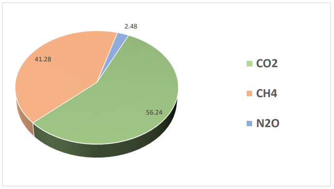
Fig. 6. Emissions of direct greenhouse gases in 2010
Despite a slight decline in industrial production in the 90s of the twentieth century and consequently, a decrease in the volume of fuel
consumption at the enterprises of Turkmenistan, greenhouse gas emissions have been steadily increasing in these years. This is primarily due to the growth in production, processing and transportation of hydrocarbon raw materials, the widespread gasification of the country during this period and accordingly, sharp increase in the volume of burned gas.
The distribution of direct greenhouse gas emission indicators by sectors of the economy of Turkmenistan indicates that the Energy sector is its main source (Fig.7). The second place is taken by the agriculture sector.
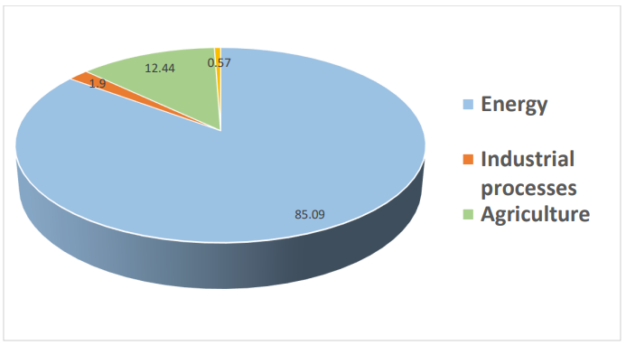
Figure 7. Greenhouse gas emissions by sectors of the economy in 2010
A comparative analysis of GHG emissions in various sectors of the economy in 1994 and 2010 shows their slight increase in Agriculture sector.
The share of the energy sector in GHG emissions in Turkmenistan is about 85% (2010) and it does not change sharply. The dynamics of decrease in the volume of emissions by 2-3% does not indicate a decrease in the total volume of GHG emissions, their absolute value in this sector is growing steadily.
Considering the dynamics of GHG emissions, it should be noted that during the specified period the volume of GHG emissions increased from 34,901 to 66,700 Gg. (CO2-eq.). Moreover, in near future, an increase in emissions is expected, since due to the development of the country's economy, the production of gas, oil and electricity and the number of vehicles will increase.
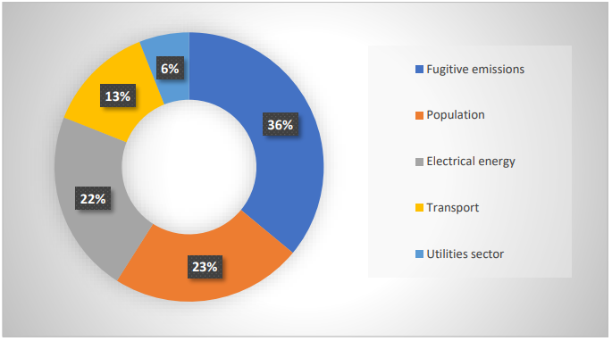
Figure 8. Structure of greenhouse gas emissions by sectors
According to 2010 data, fugitive emissions account for 36% of the total GHG emissions, 23% for the population, 22% for the electric power industry, 13% for transport and 6% for the public utilities sector. Participation of other sectors in this process is insignificant (Figure 8). In the future, in line with the development of the oil and gas industry and the electric power industry, the main GHG emissions will fall on these industries respectively.
Natural gas is the main fuel for production of heat and electricity in Turkmenistan. Other types of fuel are practically not used in this process (less than 1%). Emissions were estimated for natural gas and residual fuel oil for the period 2000–2010. In 2010, the share of emissions from the livelihood activity of the population in GHG emissions in the production of heat and electricity was 36%, power industry - 34%, transport - 19%, utilities - 9%, other sectors account for 2% (Fig. 9).
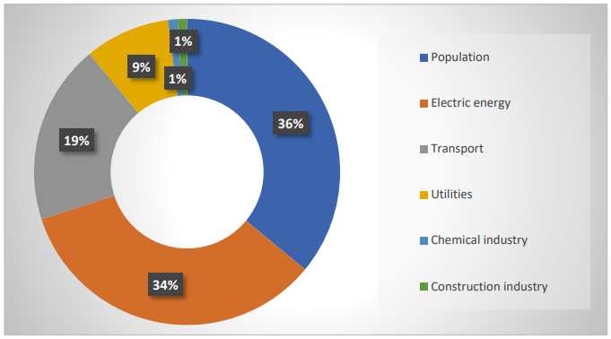
Fig. 9. The structure of greenhouse gas emissions from heat and electricity production
It should be noted that there has been a steady growth of emissions in heat and electricity production. Considering that the electricity production capacity in Turkmenistan is expanding, it is expected that the greenhouse gas emissions in the electric power sector will increase in the future.
The transport and communication system of Turkmenistan is one of the main components of successful economic development. The implementation of state development programs “ensures further development of transport infrastructure and telecommunication networks.” According to the main indicators of the transport system, high growth rates are observed annually. The system is represented by road, air, rail, and water transport, while the main load in the total volume of freight and passenger traffic falls on road and rail transport.
Transport is one of the main sources of pollutants and greenhouse gas emissions into the atmosphere. These are carbon dioxide (CO2), methane (CH4) and nitrous oxide (N2O), carbon monoxide (CO), volatile non-methane organic compounds (NMVOC), sulfur dioxide (SO2), solid particles (SP) and nitrogen oxides (NOx), which cause or aggravate the problem of local or regional air pollution. GHG emissions in this sector in 2000 amounted to 4922.16 and in 2010 - 7040.72 Gg (CO2-eq.). Emissions from vehicles in the transport sector are over 90%. The growth of GHG emissions is mainly due to an increase in the number of vehicles.
The main volume of methane emissions in the “Energy” sector falls on the oil and gas industry as one of the leading sectors of the national economy of Turkmenistan. Having been formed as an industry more than 40 years ago, it has received such an accelerated development that now it determines the economic growth not only of Turkmenistan, but also influences the economy of consumer countries, as well as those through which oil and gas transit is carried out.
In the Agriculture sector, the emissions of methane and nitrous oxide from the following sources were assessed: livestock (cattle, sheep, goats, camels, horses, pigs) - internal fermentation and manure, rice cultivation - flooded rice fields, agricultural soils.
According to the assessment results, an increase in GHG emissions from 3213.61 (2000) to 8254.84 (2010) Gg (СО2-eq.) was established. In 2010 the share of agriculture in the total volume of GHG emissions was 12.44%. This is mainly methane (over 80%), the rest is nitrous oxide. In general, GHG emissions in this sector have more than doubled compared to the 2000 level. Thus, agriculture is the second largest source of methane emissions in Turkmenistan. Intestinal fermentation is one of the key sources of GHG emissions in this sector: 2000 - 70%, 2010 - 84%.
The above data on the inventory of greenhouse gases are of great importance in determining the challenges to mitigate the effects of climate change. These data, showing the volumes of greenhouse gases generated by the consumption of fuel and energy resources, contribute to the determination of a set of measures to mitigate the impact of climate change.
Analysis of the data of the national GHG inventory shows that the main sources of greenhouse gas emissions in Turkmenistan are enterprises of the oil and gas, energy, agricultural and transport industries, as well as housing and communal services.
The largest volumes of emissions are generated from fuel combustion, production, transportation and storage of oil and gas. The increase in greenhouse gas emissions is primarily due to the growth of energy consumption. Intensive economic growth, accompanied by an increase in the production and consumption of fuel and energy resources (FER) inevitably leads to a further increase in greenhouse gas emissions (Fig.10).
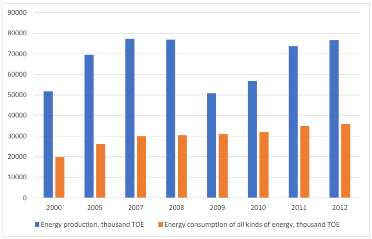
Fig. 10. Production and consumption of fuel and energy resources (in fuel oil - a ton of oil equivalent/TOE).
In order to prevent climate change, the National Strategy of Turkmenistan on Climate Change outlined the main policy directions for consistent transition to an economy with the lowest greenhouse gas emissions, without prejudice to the pace of socio-economic development. Energy efficiency and energy saving, rational use of natural gas and petroleum products, expansion of the use of renewable energy sources are the main policy priorities of limiting greenhouse gas emissions stipulated in the strategy. In order to implement this policy, tools and measures will be used limiting greenhouse gas emissions in key sectors of the economy - in industry, transport housing and communal services, which are simultaneously capable to maintain high economic growth rates.
The developing economy of Turkmenistan according to the BAU (Business As-Usual) scenario stimulates the growth of GHG emissions in the country. According to the data of the Third National Communication of Turkmenistan under the UNFCCC in 2010, GHG emissions in the oil and gas industry are estimated at 30.2% of total GHG emissions. Further, emissions are followed from the livelihood of the population (19.5%), energy sector (18.7%), transport (10.6%) and services (5.1%). Emissions from other sectors have a very small share.
In 2010, methane emissions accounted for 41% of emissions, carbon dioxide - 56.2% and nitrous oxide only 2.5%. In the Third National Communication of Turkmenistan under the UNFCCC, a forecast of greenhouse gas emissions for 2030 was prepared according to the BAU scenario.
Assumptions on possible GHG emissions are based on adopted and developed national and sectoral programs and development plans for all sectors of the economy. Overall, GHG emissions (in 2010) in the country were estimated at 0.2% of global emissions.
Turkmenistan is implementing number of measures to reduce GHG emissions in response to global climate change. Initially, a quantitative and qualitative analysis and environmental impact assessment are envisaged in these measures, which allow to anticipate possible emissions of various pollutants into the atmosphere and to plan using of modern technologies for their prevention and reduction.
The methods for establishing emissions under the BAU scenario are based on emission information, which is regularly received by the State Committee of Turkmenistan on Statistics from all enterprises in accordance with the developed forms, including the network of monitoring points of the Environmental Protection Service of the Ministry of Agriculture and Environmental Protection of Turkmenistan. In addition, reports about the financial and economic activities of line ministries and agencies are regularly submitted to the Ministry of Finance and Economy of Turkmenistan for processing.
The forecasts are based on the planned production and consumption of energy according to the indicators of the “Program of socio-economic development of Turkmenistan for the period 2011- 2030”. This program envisages transition to an economy based on industrial and innovative development. The program is also aimed at producing high-quality, competitive products in the country including the introduction of modern energy-saving and environmentally friendly technologies. Within the framework of this program, the Government of Turkmenistan is pursuing a policy in the field of energy saving.
Nevertheless, according to the National Strategy of Turkmenistan on Climate Change, by 2030, GHG emissions can reach 135,800 Gg CO2-eq. i.e., they will increase 4 times compared to 2000 and 2 times compared to 2012.
Fig. 11 shows the dynamics of the actual indicators of the economy and greenhouse gas emissions in Turkmenistan for the period 2000–2013, in %. The level for the year 2000 is taken as 100%. The process of growing of energy consumption in the country was accompanied by a natural increase of GHG emissions. At the same time, due to the high rates of economic growth, there has been a trend towards a decrease in the carbon intensity indicator. Compared to 2000, the carbon intensity index in 2012 was 0.47, which is 53% lower than in 2000.
The forecast for the volume of energy consumption in Turkmenistan until 2030 is calculated based on a baseline scenario of the economic development. The baseline scenario takes into consideration the measures envisaged in the National program of social- economic development of Turkmenistan for 2011-2030 in accordance with needs of the country's economy, its active modernization and transition to an industrial-innovative type of development, targeted programs, legislative and regulatory acts adopted in 2007-2015.
The planned large-scale measures to reduce GHG emissions will lead to further reductions of these emissions. Moreover, due to the high growth rates of the national economy, the carbon intensity indicator will decrease and by the end of the forecast period it will amount to 0.0004 tons of CO2-eq/US$ in GDP according to the Purchasing power parity (PPP), which is 1.7 times lower than the level of 2000 (Fig. 11).
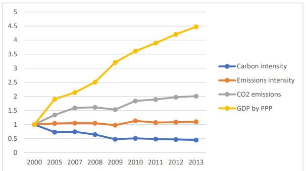
Fig. 11. Dynamics of actual indicators of GDP based on PPP, GHG emissions, their intensity, as well as carbon intensity
According to preliminary estimates, there is no significant increase in emission rates, especially until 2030, while faster energy efficiency growth contributes to reducing GHG emissions. Specific GHG emissions per unit of GDP are also declining.
The economic development plans ensure sustainable average annual economic growth for the period up to 2030. At the same time, during this period, the growth rate of GHG emissions will significantly lag behind the growth rate of GDP. In this regard, the carbon intensity of the country's economy, as well as the intensity of greenhouse gas emissions will decrease. Thus, a detailed analysis of all available data and information on greenhouse gas emissions and considering the prospect for socio-economic development allows Turkmenistan to adopt an ambitious goal - to reduce its GHG emissions in 2030 under the BAU scenario by 20% compared to the level of emissions in 2010.
This result will be achieved by the country using its own financial resources and it’ll require technical support from the developed countries to carry out preparatory work for developing legislative and regulatory documents and plans, as well as implementation of actions to increase institutional, administrative and expert capacity on emission reduction issues.
Currently it has become quite clear that restrictions on greenhouse gas emissions do not create insurmountable barriers to economic development. They stimulate technical progress, positive structural shifts in social production, the spread of energy-efficient technologies, energy saving and reforestation measures. As a result, the transformation of the technological base in energy, industry, construction and transport becomes economically profitable.
As it was shown above, the energy industry (the oil and gas complex together with the electric power industry) has significant potential for energy saving and improving Turkmenistan’s national energy efficiency indicators and can make a significant contribution to reducing GHG emissions.
The development of Turkmenistan during the years of state independence was marked by a high growth of industrial production and investment in the country's economy. The intensive growth of the country's economy is associated with an increase in the use of energy products, especially oil and natural gas. However, this leads to an increase in the level of greenhouse gas emissions in the country.
Likewise, in order to implement a policy to reduce GHG emissions, it is necessary to use appropriate tools and measures aimed at reducing GHG emissions in key sectors of the economy – energy, industry, transport, housing and communal services. At the same time, these measures can maintain high growth rates of the economy. The priority areas for such activities in Turkmenistan are as follows:
Measures to improve energy efficiency, energy and resource conservation in all sectors of the economy;
Development of renewable energy sources (RES);
Technological growth for future development;
Development of energy security through economic diversification.
The main national policy instruments for the implementation of these measures are as follows:
Improvement of the regulatory and legislative framework;
Enhancement of institutional structures;
Introduction of financial and tax mechanisms to stimulate the reduction of GHG emissions;
Development and implementation of the national system of inventory and monitoring of GHG emissions;
Development of information tools.
Considering the main directions and tools of the National Strategy of Turkmenistan on Climate Change in priority sectors of the economy, measures have been developed to reduce emissions, which are mandatory for implementation.
Priority measures to reduce emissions in Turkmenistan can be implemented first of all, in the field of production, consumption and transportation of hydrocarbons (including the prevention of methane leaks), introduction of energy conservation and energy efficiency, development of renewable energy sources, optimization of agriculture and waste disposal; secondly, through implementation of projects related to the absorption of carbon dioxide from the atmosphere in areas such as reforestation and planting of forests, non-depleting forest management and preventive anti-erosion measures.
Forest projects that create additional carbon quotas can produce several co-benefits, including conservation of biodiversity, production of non-timber forest products and soil protection. The use of modern land use methods in agriculture and forestry of Turkmenistan increases the biological productivity of ecosystems and at the same time leads to the accumulation of carbon in the soil.
It should also be considered that the social significance of climate change mitigation measures exceeds the current costs of society for their implementation. Fossil fuel combustion is a major source of not only GHG emissions, but also air pollution in general. Therefore, in Turkmenistan, the implementation of measures to reduce greenhouse gas emissions is beneficial at the state level. The main task of the state, which sets the goal of low-carbon development is to interest entrepreneurs and enterprises of all forms of ownership in implementing similar projects.
The National Strategy of Turkmenistan on Climate Change stipulates measures to reduce GHG emissions in priority sectors, which will promote implementation of the ambitious contribution of this NDC document.
The industry in Turkmenistan is represented by enterprises of the electric power industry, oil and gas production, oil refining, chemical and petrochemical industries, mechanical engineering and metalworking, facilities to produce building materials, light and food industries.
Specific measures to improve the energy efficiency of sectors and individual industries will be developed considering their specifics and technological processes. Common approaches for the successful development and implementation of energy efficiency measures are:
Development of energy saving programs for individual industries;
Improving the system of commercial and technical accounting of energy consumption at the enterprises;
Modernization of ongoing technological processes, as well as optimization of the structure of specific enterprises;
Introduction of energy management, analysis of basic technological processes;
Specialized training of personnel, increasing their interest in energy conservation.
The electric power industry of Turkmenistan is one of the basic sectors of the economy. The implementation of national plans to accelerate socio-economic development and ensure the energy security of the country depends on the level of its development. At the same time, the intensive growth of electricity production contributes to an increase in greenhouse gas emissions. In the electric power sector, the National Strategy of Turkmenistan on Climate Change designed to promote the following measures:
Strengthening the legislative framework for the implementation of energy-saving and energy-efficient policies and a system of economic and financial incentives, developing of a national system of pricing and tariffing;
The use of advanced technologies for the production and distribution of electricity, modernization and repair of equipment;
Improving the accounting and control system for the operation of the electric power system.
Renewable energy sources (RES): The natural and climatic conditions of Turkmenistan are exceptionally favorable for the widespread use of renewable energy sources such as solar, wind, geothermal and biomass energy in electricity generation, fuels of plant origin, heat and cold.
To increase the role of renewable energy sources in the country's energy balance and developing renewable energy, the following measures will be implemented:
Further support of research and development and testing of renewable and alternative energy technologies, as well as their adaptation to the climatic conditions of Turkmenistan;
In the short term, the introduction of small and medium-sized renewable energy installations in remote and sparsely populated areas;
In the medium and long term, the introduction of own production capacities and increasing the share of renewable energy in the country's energy balance;
Creating economic incentives for the use of renewable energy.
The oil and gas complex of Turkmenistan not only forms the structure of the economy but also plays a crucial role at all stages of its development. Also, its role in the formation of the gross domestic product and the country's export potential is high. Some stages of the production activity of the oil and gas industry are accompanied by large greenhouse gas emissions. The renovation of some of the technological equipment in the oil and gas sector contributed to significant reductions in greenhouse gas emissions in Turkmenistan.
The priority goals of improving technological and economic efficiency in the oil and gas sector are the large-scale introduction into production of new advanced energy-efficient technologies and the latest achievements of world science throughout the entire production cycle: from geological exploration, mastering and developing of oil and gas fields including transportation, storage and use of oil and gas.
The main measures to reduce GHG emissions in the oil and gas complex are as follows:
Further improvement of methods for monitoring pollutant emissions;
Use of automatic systems for detecting emissions leaks;
Reduction of leaks and gaps in the main oil and gas pipelines;
Reduction of leaks in low and medium pressure gas distribution networks;
Timely repair and replacement of equipment for infield and main oil and gas pipelines;
Modernization of flare facilities, introduction of new equipment and technologies for utilization of associated gases in oil fields, including for own needs of enterprises;
Improvement of the accounting system for transportation and consumption of oil and gas;
Construction of mini-compressor stations at low-productive oil fields;
Strengthening monitoring of domestic natural gas consumption;
Establishment of a system for the rational use of energy resources and products through strategic pricing.
Transport: The transport and communication system of Turkmenistan is one of the main components of successful economic development. It is represented by road, air, rail and water transport. According to the main indicators of the work of the transport system, high growth rates are observed annually.
Significant growth in the vehicle fleet as a result of improving people's well-being and expanding the scale of large-tonnage transportation is accompanied by intensive increase in gasoline and diesel fuel consumption, which causes an increase in greenhouse gas emissions.
To optimize the work of the transport sector, the following measures are the priority areas for reducing the impact of transport on the climate, as well as maintaining air quality in cities and large settlements:
Support for the development of public transport;
Optimization of traffic flows to prevent congestion;
Development of transport infrastructure, including new interchanges, exploring the needs of opportunities for multi- tiered traffic;
Renewal of the vehicle fleet, control over its timely repair, expansion of mechanisms for regulating the import of vehicles taking into account energy efficiency;
Exploring a phased transition to other cleaner and more economical fuels, including compressed natural gas or liquefied petroleum gas;
Reducing the empty run of railway transport, ensuring efficient loading and studying the gradual transition of railway transport to electric traction.
Housing and communal services: The economic upswing in Turkmenistan is also reflected in the intensive renovation of the country's housing and communal facilities. New residential buildings are being built using modern technologies, with thermal insulation of the walls with foiled mineral wool. According to the plans to increase the living area per person and the forecast of population growth, it is planned to build many multi-storey residential buildings provided with heat and hot water based on the use of autonomous gas boilers.
The old multi-storey residential buildings were built without considering the climatic features of Turkmenistan, in particular the increased level of solar radiation. Therefore, the priorities for the development of the housing and communal sector, considering energy efficiency improvements are:
Improving the efficiency of urban heating systems;
Further renovation of the housing stock, taking into account climate change;
Improvement of the regulatory framework of standards and rules for construction in order to ensure energy efficiency and thermal reliability of buildings;
Activities to raise public awareness and interest;
Energy efficiency certification of home appliances.
The State Energy Saving Program for 2018-2024 also envisages increasing the role of renewable energy sources. It is planned to launch biogas plants for the processing of solid waste, the installation of industrial wind turbines at optimal sites for their operation. This Program is designed to promote careful and rational use of the country's natural resources, increase efficiency and competitiveness of the national economy, protect the environment and ensure favorable living conditions for the population.
The dynamic pace of socio-economic development of Turkmenistan, the increase in industrial and agricultural production, commissioning of new plants and factories, residential buildings, etc. - all this entails a significant increase in energy consumption. In this regard, the most economical and efficient use of energy resources is a task of state importance today.
In other sectors of the economy, priority attention is also paid to the modernization and technical re-equipment of enterprises, the introduction of modern resource-saving technologies, the latest scientific and technical developments and improvement of accounting systems and energy consumption.
The domestic electric power industry, which plays a very significant role in implementing programs for the accelerated industrialization of Turkmenistan and dynamic development of the national economy is a vivid example of it. As it is known, country's power plants run on natural gas that is cheap for local conditions. Gas is supplied from nearby fields and diesel fuel is used as a backup fuel, if necessary, again from local refineries.
Among the innovative energy projects of the country is the construction of the first combined cycle power plant located on the territory of the Mary State Power Plant (SPP) and it belongs to the engineering and technical developments of a new generation. Unlike other SPP, not only natural gas but also steam is used to generate electricity. Thus, the consumption of "blue fuel" is significantly reduced. Combined cycle power plants are attractive not only from an economic point of view but also from an environmental perspective since the volume of emissions of combustion products into the atmosphere – carbon dioxide is reduced by 2-3 times.
In September 2021, a new gas turbine power plant with a capacity of 432 MW was built and put into operation on the territory of the Lebap region power plant. As a result, the specific fuel consumption per unit of produced electricity decreases, which makes it possible to reduce greenhouse gas emissions by about 128,000 tons/year.
Departments of the Ministry of Energy are constantly taking active measures, leading to reduction of GHG emissions. Within the framework of the UNDP/GEF project “Sustainable Cities in Turkmenistan: Integrated Development of Green Cities in Ashgabat and Avaza”, an energy audit of street lighting systems was carried out. At the selected pilot site, 258 new LED electric luminaires were installed, as a result of which a saving of electrical energy equal to = 1,331,053 MWh/year and a reduction in CO2-eq emissions of about 1,000 tons/year was achieved. In this regard, the Ministry of Energy plans to install about 162,000 more LED lamps in the cities of Turkmenistan by the end of 2024. This will result in a GHG reduction of about 600,000 tons/year of CO2-eq.
Alongside, the reconstruction of electrical networks of street lighting systems in Ashgabat began with the replacement of overhead power lines into cable ones with purpose to reduce greenhouse gas emissions, which can help saving electric energy by 37,548,032 kWh/year and reducing of CO2-eq. by 21,174 tons/year. Another effective example is the energy audit of the pilot site of the replaced transformers in cooperation with specialists from "Ashenergo" and it is expected to save electricity by 5,285,416 kWh/year and reduce CO2 emissions by 3,000 tons/year. In order to disseminate the positive experience gained, the Ministry of Energy plans to purchase transformers with the voltage of 10/0,4 kV in the amount of 738 sets, which will contribute to reducing gross greenhouse gas emissions by more than 100,000 tons/year of CO2-eq.
There are large reserves for energy saving in the housing and communal sector. Currently, new administrative and residential buildings are being built using modern technologies, with special thermal insulation of the walls. Modern electricity and gas metering devices are installed in enterprises and residential buildings.
Within the framework of the completed joint project of the United Nations Development Program, the Global Environment Facility and the Government of Turkmenistan "Improving energy efficiency in the housing construction sector of Turkmenistan", building codes were revised in the sections "Residential buildings" and "Roofs and roofing". Thus, supporting the efforts of the international community to reduce greenhouse gas emissions, the country is systematically moving towards a "green economy", use of modern environmentally friendly and resource-saving technologies in the industry and social sphere.
Increasing the share of "clean" energy use will have a positive impact on the environmental situation in the region and reduce harmful emissions into the atmosphere, which will be one of the key steps to implement the Paris Climate Agreement ratified by Turkmenistan in October 2016.
After ratification of the Paris Agreement, the number of new legal documents, laws and regulations, strategies and programs directly related to climate change mitigation issues has been adopted in Turkmenistan and among them:
The Law of Turkmenistan "On Waste" (2015);
The Law of Turkmenistan "On the Protection of Atmospheric Air" (2016);
The Law of Turkmenistan "On Environmental Safety" (2017);
State Energy Saving Program of Turkmenistan for 2018-2024 (2018);
National Strategy of Turkmenistan on Climate Change (new edition, 2019);
The Law of Turkmenistan "On Environmental Audit" (2019);
Ratification of the Kigali Amendment to the Montreal Protocol on Ozone-Depleting Substances (2020);
The Inter-agency Commission of Turkmenistan on Environmental Protection was established (2020);
National Strategy for the development of renewable energy in Turkmenistan until 2030 (2020);
The Law of Turkmenistan "On Renewable Energy Sources" (2021);
A draft new Law of Turkmenistan "On energy saving and energy efficiency" has been developed (under consideration in the Mejlis/Parliament of Turkmenistan).
In compliance with international agreements, Turkmenistan has developed a national strategy for gender equality, which serves as the main reference point for state activities to ensure equal rights and opportunities for men and women. In this area, the National Action Plan of Turkmenistan on Gender Equality for 2015-2020 was adopted. The implementation of measures outlined in the plan has led to certain progress in achieving gender equality. Supporting implementation of the national gender strategy, on December 4, 2020, at the meeting of the Cabinet of Ministers of Turkmenistan, the President of Turkmenistan by his Decree approved the National Action Plan for Gender Equality in Turkmenistan for 2021-2025. The national agenda for achieving gender equality, as outlined in this plan, includes the elimination of gender discrimination and the empowerment of women and girls. The Plan also emphasized the importance of consolidating the efforts of central, local and elected authorities and civil society organizations.
Within the framework of the implementation of the first National Plan, it was determined that additional efforts are needed to address issues related to improving national legislation, promoting positive social gender norms, actively involving local authorities in implementation of gender policy, strengthening monitoring and evaluation mechanisms to assess the progress achieved.
Strengthening of institutional mechanisms for gender equality is based on creation of a regulatory framework that ensures equality between women and men. The most important step in improving legislation was the adoption of the Laws of Turkmenistan "On State guarantees of equal rights and equal opportunities for women and men" and "On the Ombudsman".
At the same time, within the framework of the plan, the country has also taken consistent steps to integrate generally recognized international legal norms and provisions into national legislation, including those related to the creation of equal opportunities for men and women. As a result, necessary legislative conditions have been created in Turkmenistan for equality of men and women in the field of socio-political, economic, social and cultural life, and discriminatory manifestations against women have been eliminated. It should be noted that the norms of the current national legislation of Turkmenistan, which are generally gender-neutral, do not contain discriminatory provisions against women and their civil, political, economic, social and cultural rights.
The principles of gender equality are also taken into consideration in the implementation of national and international climate change projects and accepted as an important element in incorporating adaptation issues into local adaptation plans. This contributes to ensuring equal participation of men and women in decision-making processes for designing and implementing adaptation measures, as a result of which the adaptation planning process and activities do not exacerbate gender inequality.
Gender-sensitive adaptation planning mechanisms allow to: acknowledge the multiple complementary roles that women and men play in agriculture; consider the norms that shape access to decision- making roles, access to resources and information and the availability of options; relying on the differentiated knowledge of men and women and to reveal their capabilities through consultations with participation of all stakeholders; orient the benefits of adaptation plans to the needs of different groups; keeping track of who adapts, in what ways and with what resources.
Within the framework of the UNDP/GEF project “Supporting climate resilient livelihoods in agricultural communities in drought- prone areas of Turkmenistan” workshops were organized with participation of international consultants to raise awareness among women in local communities about adaptation planning processes. The main purpose of these seminars was to provide new knowledge on assessing women's access to land and water resources, markets, technologies, fertilizers, loans and training to improve local adaptation plans and local development.
Turkmenistan has developed and is implementing the National Strategy on Climate Change, where adaptation and mitigation measures occupy a special place. The Strategy is the basis for actions in the field of climate change. However, the implementation of measures to adapt to climate change and mitigation requires significant financial and technical resources, as well as increasing the capacity of government decision-makers. The necessary financial resources are taken into consideration in state, sectoral and regional programs of the country's socio-economic development. At present, most of the funds for climate change financing in Turkmenistan are allocated from the state budget. The Ministry of Foreign Affairs of Turkmenistan and the Ministry of Agriculture and Environmental Protection of Turkmenistan are responsible for coordinating all international environmental projects and actively cooperate with international partners in their implementation.
The National Forest Program sets the direction of policies and measures in the forest industry. The effects of climate change include an increased risk of forest fires and pest infestations. Large-scale urban greening activities carried out in the country create the basis for the protection and sustainable use of forests. Forest plantations in the vicinity of Ashgabat - the capital of Turkmenistan, as well as in the Aral Sea region are especially impressive.
In 2020, Turkmenistan joined the international program "Trees in Cities”, and 25 million seedlings were planted in cities and around the cities of the country. The initiative “Trees in Cities” is a global campaign launched by the United Nations Economic Commission for Europe (UNECE) to support climate change actions in cities. In general, millions of tree seedlings are planted annually in Turkmenistan. The country will continue to step up climate change adaptation efforts through nationwide greening plans, with 30 million seedlings planted in 2021.
The National Action Plan for the Caspian Sea (for the Turkmen sector of the Caspian Sea) takes into account the potential risks associated with sea level fluctuations, issues of reducing emissions and protecting sensitive biodiversity, including such iconic species as the Caspian seal and migratory species.
International climate finance is provided in the form of grants and technical assistance. The main international sources of climate finance are the Global Environment Facility (GEF) and the Adaptation Fund (AF). Over the past decade, Turkmenistan has implemented international climate projects worth about US$ 200 million. At the same time, US$ 20 million was allocated by the funds themselves and the rest was provided in the form of state and other co-financing of projects (CAREC/Zoi Environment Review, 2020).
Most of the funds are being received from the GEF and the AF and used for the projects aimed at reducing greenhouse gas emissions, minimizing damage from droughts and adaptation to climate change in the field of ensuring reliable supply of drinking water to the population, animal husbandry and improving the energy efficiency of water supply systems. The total amount of climate financing allocated to Turkmenistan within the framework of GEF projects amounted to 15.19 million dollars (Figure 12).
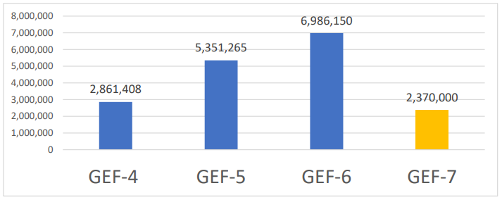
Fig.12. Amounts of climate financing from GEF (in USD)
GEF supports the efforts of projects in the country to improve the energy efficiency of irrigation systems, contributes to reducing water consumption and improving the reliability of water supply to remote communities of Turkmenistan in arid Lebap and Dashoguz regions. To this end, drip irrigation, rainwater harvesting and water consumption metering systems are being introduced. The UNDP office in Turkmenistan successfully implemented a joint project in cooperation with the Adaptation Fund, which provided assistance to the water user associations in implementing community adaptation plans that led to improving of water infrastructure, introducing of a drip irrigation system and reducing water loss during transportation. On a bilateral basis, Turkmenistan is supported by the European Union, the USA, and Germany. Thus, receiving funding from Germany, the Sustainable Forest Management and Pasture Project implements measures to adapt and mitigate the effects of climate change through the introduction of a modern ecosystem approach and integrated forest management (OECD 2016).
In addition, Turkmenistan actively participates in regional climate projects, such as CAMP4ASB, Smart Waters and others, where technical and other assistance is provided to improve climate services and improve water management and accounting.
Turkmenistan began active cooperation with the Green Climate Fund (GCF) in 2020 on the so-called GCF Readiness project supported by the country office of the Regional Environmental Center for Central Asia (CAREC). The project "Strengthening the capacity of Turkmenistan and support in the development of country programs and regional actions in addressing issues related to climate change" implemented by CAREC is the first step of the state in working with the GCF, which will allow to establish processes for accessing to its funds. In 2021, the GCF allocated funds for a new project to develop National Adaptation Plan (NAP) in Turkmenistan.
The volumes of international climate financing in Turkmenistan are shown in Figure 13.
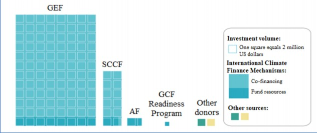
Figure 13. Volumes of international climate finance
Turkmenistan is the largest producer of natural gas in Central Asia. The use of natural gas by industrial enterprises and the population provides a smaller "carbon footprint" and lower harmful emissions compared to coal burning, however, per capita emissions in Turkmenistan remain higher than the global average. In order to reduce GHG emissions in the country, the first power plant with a capacity of 1,500 MW operating on a combined cycle was built in Mary at the expense of state funds (1.2 billion US dollars). The power plant is equipped with the latest advanced technology equipment that meets international energy efficiency standards and environmental protection requirements which allows saving natural gas consumed for electricity generation, receiving additional electricity without consuming excess fuel. In addition, the power plant allows to combine the use of gas and steam in energy production, which reduces harmful emissions into the atmosphere and increases the efficiency of the plant. In this regard, the specific fuel consumption for the generation 1 kW/hour of electricity has been significantly reduced, and the consumption of electricity for own needs also decreased. The volume of harmful emissions into the atmosphere including greenhouse gases will be reduced by 3.1 million tons annually.
The implementation of adaptation measures entails more rational use of water and land resources, conservation of biodiversity, increasing the efficiency of agriculture and other sectors of the economy. In this regard, the main source of financing for these activities in the future, as in their implementation in previous years, will be internal financial resources (the state budget) and own funds of enterprises, including through the public-private partnerships. Likewise, borrowed funds from the national banks will be attracted. Compared to previous periods of development, the financial participation of the non-state sector of the economy will increase. According to the National Strategy of Turkmenistan on Climate Change, it is planned to establish a National Clean Climate Fund, the budget of which can be formed from various internal, external, as well as innovative sources of financing for Turkmenistan.
Another option for climate change financing could be activities that take into account the principles of responsible environmental management, extended producer responsibility, international standards and the best available technologies (BAT). For example, the latter is used for technologies for the production of goods, performance of work, provision of services, determined on the basis of modern achievements in science and technology and the best combination of criteria for achieving the goals of environmental protection, subject to the technical feasibility of its application.
The role of the private sector in climate change adaptation measures is becoming increasingly relevant, especially in the agricultural sector of the country, where there is great potential to reduce the impact of climate change. Activities of private sector and civil society representatives of Turkmenistan in the process of combating climate change is at the stage of its active formation. In recent years, private enterprises and firms have begun to implement their ideas in such areas as energy efficiency, energy conservation, renewable energy, water conservation and waste management. There are also several dozens of private environmental firms and NGOs operating in the country, which are mainly engaged in environmental protection issues. Currently, due to the preparation of sectoral adaptation and mitigation plans in accordance with the National Strategy of Turkmenistan on Climate Change, there is a huge opportunity to involve these organizations in realization of the Strategy. In this regard, there is a need to take measures excluding various legislative or bureaucratic obstacles for their normal work in close cooperation with the Union of Industrialists and Entrepreneurs of Turkmenistan and public organizations. It may be necessary to offer them various benefits, incentives or other stimulus. At this stage, it is important and possible to raise awareness and knowledge of the private sector on the benefits of moving to low-carbon development and the introduction of climate-resistant, innovative resource-saving technologies (water-saving, soil-protecting, energy-saving, etc.) in all production processes. Financial instruments for a low-carbon transition and post-pandemic economic recovery could include easing commercial credit conditions, financial incentives for climate-related projects, including “green” subsidies and tax breaks and incentives for “green” public procurement.
The measures taken should help to stimulate investors providing capital for science-intensive production, dissemination of which will accelerate the innovative development of agriculture. It is important to carry out this through certain support for investors and through the organization of temporary teams for the implementation of any major innovative project. In modern conditions, the investment of innovative processes in agriculture and water management of Turkmenistan attracts little national banks and foreign investors. Therefore, the most important role in the activation of the innovation process belongs to institutional transformations in the industry.
Successful implementation of innovation policy is impossible without formation of legislative and regulatory mechanisms regulating innovative activities in agriculture. This requires the development and adoption of laws and other regulatory documents which should determine the attitude of the state to the innovative development of the industry, define the responsibility of state organizations, directions and measures of state support to create favorable conditions for investing in innovative activities.
In particular, it is necessary to adopt at the national level and applicable to local conditions the legislative acts on the innovative development of the agricultural sector of the economy. One of the main tasks of the regulatory framework for climate change activities should be regulation of the relationships between stakeholders involved in the process of adaptation to climate change.
Study of the activities of organizational structures and the regulatory legal framework of Turkmenistan in this area, as well as analysis of existing models for the dissemination of agricultural knowledge shows that there is a need in the country for specialized organizations that promote innovative technologies and the best practices and provide information and consulting services to farmer associations, farmers and other producers of agricultural products. At the same time, an analysis of the current legislation in the field of agriculture, the activities of state and non-state bodies and organizations show that there is a certain political and legal basis for the formation of a system of agro-advisory services in Turkmenistan.
Thus, in accordance with the Law of Turkmenistan "On State Regulation of Agricultural Development" (09.06.2018), organizations providing services to agricultural producers are defined for the first time. These include organizations that provide scientific and technical, informational, marketing, banking, advisory, agrotechnical, agrochemical, veterinary services, as well as services for the provision of irrigation water, use of biological plant protection products, production of agricultural and forestry products, processing, storage and transportation of raw materials and food, organization of agricultural trade of products, supply of material and technical resources for its production.
The Law of Turkmenistan “On State Regulation of Agricultural Development” envisages measures to implement the state agrarian policy in the field of state regulation of agricultural development, including the provision of information support to agricultural producers and consulting services (Art.10, p. 5). In addition, among the main areas of state support, information and consulting services for the implementation of the State Program in the field of state regulation of agricultural development is determined (Art. 15, p. 15).
The Law of Turkmenistan "On state support to small and medium enterprises/SME" (15.08.2009) among the main areas of support provides access to SME for legal, economic, and other information, scientific and technical developments and technologies; assistance in training, retraining and advanced training of the personnel (Art.11). The laws establish general directions, principles and measures of agricultural policy, suggesting elaboration of a state program for the development of agriculture and regulation of agricultural products, raw materials and food markets. It is necessary to develop by-laws for the application of laws, the procedure and timing of their development, indicating the mechanisms of responsibility (sanctions) for violation the norms of the law. In the development of by-laws, the interests of the interacting parties and their incentive measures should be taken into account.
The use of mineral fertilizers on a scientific basis according to the recommendations of agrochemical laboratories in combination with other adaptation measures can dramatically increase the efficiency of all types of mineral fertilizers and thereby ensure the sustainability of agro-ecological systems. In this regard, it is necessary to improve the methods and approaches used, taking into account the natural and climatic changes occurring in recent years.
There are more general provisions in laws and codes that need to be specified by normative legal acts at the agency/department level. This requires to develop new or update existing codes of practice, guidelines, standards and other documents that will help the country to improve effectiveness of its response to climate change.
At the national level, it is necessary to adapt to climate change based on a single methodology. This requires a unified methodology for assessing climate risks, ranking measures to adapt to these risks, as well as developing adaptation plans of different levels and indicators of their achievement. For effective adaptation, it is imperative to develop guidelines for the national adaptation planning process based on the proposed UNFCCC document. The guidelines provide a voluntary support mechanism through which countries can take steps and actions to ensure effective adaptation.
Recognizing the reality and assuming responsibility, Turkmenistan intends to contribute to international efforts to combat climate change. Elaborating a low-carbon development policy, Turkmenistan takes into consideration the level of its economic and technological development and the social consequences of reducing emissions. The country, contributing to global efforts to mitigate the impact of climate change, should follow a "win-win" development option – improving the quality of economic growth and the living standard of the population.
Turkmenistan's approach to considering equality and ambition is to assess how the country's national efforts contribute to the achievement of the goals of the UNFCCC and the Paris Agreement to achieve stabilization of greenhouse gas concentrations in the atmosphere at a level that would prevent dangerous anthropogenic interference on the climate system. Based on the achievement of Turkmenistan's proposed NDC target for 2030, decoupling between economic growth and greenhouse gas emissions can be achieved. There will be a reduction in greenhouse gas emissions per unit of GDP in the country. At the same time, stabilization of emissions by 2030 will not create obstacles for the socio-economic development of the country and it is consistent with the overall goals of economic development, improving energy efficiency, reducing the energy intensity of the economy and increasing the share of renewable energy in the energy balance of Turkmenistan. Stabilization or beginning of reducing greenhouse gas emissions in 2030 will allow Turkmenistan to enter the trajectory of low-carbon economic development. Turkmenistan's NDC ambition is expressed in 20% reduction of greenhouse gas emissions in 2030 compared to the BAU scenario relative to 2010 emission levels.
The country's national contribution is determined considering the current and projected levels of greenhouse gas emissions in 2030 under the BAU scenario. Total emissions should be considered, as well as their ratio to the country's GDP. The country's contribution to tackling climate change is closely linked to the ability to invest in appropriate climate change mitigation measures. In addressing the question of equity, one of the elements of the NDC is the growth rate of GDP and GDP per capita.
Turkmenistan is currently characterized as an industrial- investment country with a developing infrastructure. The means of implementation of the NDC is the funds of the state budget and the funds of the sectoral enterprises of Turkmenistan. Project proposals and measures that provide the necessary level of reduction of greenhouse gas emissions have been developed within the framework of the preparation of the Third National Communication and the National Strategy of Turkmenistan on Climate Change. The country's economy has the potential to further reduce greenhouse gas emissions but in this case, the country will need additional financial resources and technological support.
As mentioned above, along with the international financial support to cover mitigation costs, the country will also need assistance in the form of technology transfer and capacity building.
In order to successfully and timely implement the objectives of the Paris Agreement, this NDC document includes the Tables on the Adaptation Contribution (Table 1), the Mitigation Contribution (Table 2), as well as the Implementation Plan of the Paris Climate Agreement in Turkmenistan (Table 3). These tables and the Implementation Plan have been prepared in accordance with the updated National Strategy of Turkmenistan on Climate Change and include the rationale, goals, commitments, specific measures, responsible organizations, implementation status, and the timing of the implementation of activities. At the same time, it is necessary to emphasize the fact that all activities in the field of climate change, including specific mitigation and adaptation measures for the sectoral agencies contained in the National Strategy, and the Plan for the implementation of the Paris Climate Agreement (Table 3) will be mandatory for implementation in accordance with the specified time frames.
|
1. Rationale for including adaptation in the NDC |
The climate of Turkmenistan is one of the most complex in the Central Asian region. The country experiences the highest air temperatures and the lowest level of precipitation. Lack of adaptation measures may have a strong impact on human health and well-being. The country may face water scarcity, increased desertification, land degradation, droughts and hazards leading to unsustainable agricultural production and threatening food security. |
|
2. Adaptation Goal |
|
|
3. Priority sectors and anticipated economic losses in case of failure to implement adaptation activities. |
Agriculture and Water Resources, Healthcare, Soils and Land Resources, Ecosystems and Forestry, Hydrometeorological activities. If preventive adaptation measures are not implemented, the total amount of damage only in the agricultural sector may amount to tens of billions of manats by 2040. Water shortage due to climate change in Turkmenistan may reach 5.5 billion m3 by 2030. |
|
4. Resource or financial needs |
|
|
4.1. Own resources |
A large-scale reform in the field of agriculture is being carried out in the country, hundreds of millions of US dollars are annually invested from the state budget for the development of the agricultural sector and water management. Also, a significant part of the state budget is allocated to the health care system. Significant state resources are also attracted for purchasing modern agricultural machinery. |
|
4.2. International support |
Implementation of adaptation actions by 2030 will require international financial support of approximately US $ 0.5 billion. |
|
4.3. Establishment of the National Clean Climate Fund |
The National Strategy of Turkmenistan on Climate Change envisages establishment of the National Clean Climate Fund, the budget of which can be formed from various internal, external, as well as innovative sources of financing for Turkmenistan (in progress). |
|
5. Monitoring and reporting |
Key ministries and departments are responsible for the implementation of activities. The Interagency Commission on Environmental Protection and the Ministry of Agriculture and Environmental Protection of Turkmenistan will coordinate the implementation process and ensure periodic monitoring of implementation of activities and progress achieved. Also, the country has begun a process to develop a national Measurement, Reporting and Verification (MRV) system for climate change. |
|
1. NDC: Ambitious Mitigation Contribution |
Mejlis/Parliament of Turkmenistan). |
|
2. Type of contribution |
Reduction of emissions in relation to the baseline scenario. |
|
3. Scope of coverage |
Energy, Agriculture, Industrial processes and product use, Waste. |
|
4. Types of greenhouse gases |
Carbon dioxide (CO2), Methane (CH4), Nitrous oxide (N2O), Perfluorocarbons (PFCs). |
|
5. Contribution terms |
2021–2030 |
|
6. Baseline year |
2010 |
|
7. Own resources |
The costs of mitigation measures and risks of losses for the country have not yet been estimated in financial terms. Activities are financed annually by the state funds (hundreds of millions of dollars) for the commissioning of new technological equipment and replacing of old equipment in the oil and gas and power sectors, industry and transport, as well as reconstruction of main gas pipelines, etc. In particular, the combined-cycle power plant built in Mary (costing US$1.2 billion) annually reduces GHG emissions by 3.1 million tons of CO2. On the territory of the Lebap region power plant, a new gas turbine power plant with the capacity of 432 MW (costing US$350 million) was built and put into operation in September 2021, which allows achieving reduction in greenhouse gas emissions by 128,000 tons of CO2 per year. |
|
8. International support |
Received from GEF - US $ 15,198,823. In future, implementation of the mitigation measures outlined in the NDC will require hundreds of millions of US dollars of international financial support. |
|
9. Establishment of the National Clean Climate Fund |
The National Strategy of Turkmenistan on Climate Change envisages establishment of the National Clean Climate Fund, the budget of which can be formed from various internal, external, as well as innovative sources of financing for Turkmenistan (in progress). |
|
10. Monitoring and reporting |
Key ministries and departments are responsible for the implementation of the activities. The Ministry of Agriculture and Environmental Protection will coordinate the implementation process and ensure periodic monitoring of the progress achieved. In Turkmenistan, the development process has begun for the introduction of:
Verification (MRV) System for Climate Change. |
|
Activities |
Responsible organizations |
Implementat ion timeline and progress status |
|
|
1. |
Preparation of the Fourth National Communication of Turkmenistan and the First Biennial Update Report under the UNFCCC |
Ministry of Agriculture and Environmental Protection (MoAEP), sectoral departments, with the assistance of the Global Environment Facility (GEF), the United Nations Environment Program (UNEP), the United Nations Development Program (UNDP), etc. |
2020–2023 (in progress) |
|
2. |
Development of the National Inventory System for Greenhouse Gas Emissions and Sinks |
Ministry of Agriculture and Environmental Protection, State Committee on Statistics (GoskomStat), sectoral departments, with the assistance of UNDP, UNFCCC Secretariat, etc. |
2021–2024 (in the process) |
|
3. |
Adoption of the new Law of Turkmenistan "On Energy Saving and Energy Efficiency" |
Mejlis (Parliament), Ministry of Energy, sectoral departments, with assistance from the UNDP |
2021–2023 (in the process) |
|
4. |
Development of the National Adaptation Plan (NAP) |
Ministry of Agriculture and Environmental Protection, sectoral departments, private sector, with the assistance of the Green Climate Fund (GCF) and UNDP, etc. |
2021–2024 (in the process) |
|
5. |
Development and implementation of the Measurement, Reporting and Verification (MRV) system for Nationally Determined Contributions (NDCs) |
Ministry of Agriculture and Environmental Protection, Ministry of Finance and Economy (MFE), GoskomStat, sectoral departments, with the assistance of UNDP, GEF, GCF, etc. |
2022–2026 |
|
6. |
Development of information, scientific and human potential in the field of climate change |
Ministry of Agriculture and Environmental Protection, Ministry of Education, Academy of Sciences of Turkmenistan (AST), public organizations, private sector, with the assistance of UNDP, UNEP, United Nations Children's Fund (UNICEF), etc. |
2022–2030 |
|
7. |
Conducting the UNFCCC New Technology Needs Assessment (NTNA) |
Ministry of Agriculture and Environmental Protection and other key agencies with the assistance of the UNFCCC Secretariat, GEF, UNEP and UNDP, etc. |
2022–2025 |
|
8. |
Establishment of the Climate Data Fund of Turkmenistan |
Ministry of Agriculture and Environmental Protection, GoskomStat, AST, with the assistance of the UNFCCC Secretariat, UNDP, and UNEP etc. |
2022–2026 |
|
9. |
Preparation of the Fifth National Communication of Turkmenistan under the UNFCCC |
Ministry of Agriculture and Environmental Protection and other key agencies with the assistance of the GEF, UNEP, UNDP and others. |
2024–2028 |
|
10. |
Development of the National Mitigation Plan (NPM) |
MoAE and other key agencies, private sector, with the assistance of the UNFCCC Secretariat, GEF, UNDP and UNEP etc. |
2023–2029 |